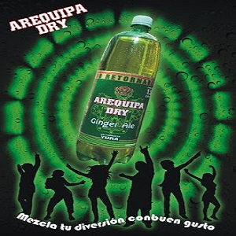

CHICA DE JORA
Poner a remojar la jora en un bol con agua durante 1 día.
Al día siguiente, escurrirla, tritutarla un poco y ponerla a hervir en una olla con 4 litros de agua, la pimienta de chapa y los clavos de olor, hasta que se reduzca a la mitad.
Agregar otro litro más de agua hirviendo y dejar que hierva a fuego lento durante 1 hora.
Colar a través de un paño limpio, agregar la chancaca trozada y poner a fermentar por 2 semanas en una olla de barro (sin olvidarnos de ir removiendo).
Tapar con un pañuelo/ servilleta.
COLA ESCOSESA
En el proceso de preparación se mantienen sus cualidades y minerales de origen, los cuales hacen que Kola Escocesa sea una de las pocas bebidas a nivel mundial que se elabora con agua mineral natural y con insumos de primerísima e incomparable calidad.
Kola Escocesa es un excelente acompañante de cualquier tipo de comida inclusive la muy condimentada, porque sus componentes minerales y bicarbonatados la hacen una bebida altamente digestiva, lo que la ha convertido en parte importante de la tradición gastronómica de Arequipa y por su excelencia en: LA BEBIDA DE AREQUIPA
AREQUIPA DRY

Con las mismas cualidades de excelencia de los Productos Yura, es una bebida refrescante y antioxidante que se puede tomar sola o acompañada de bebidas alcohólicas: Ron, Whisky, Vodka, Gin entre otros, pero principalmente el Pisco, nuestra bebida de Bandera, de cuya combinación resulta en el ya famoso CHILCANO DE PISCO, bebida tradicional de nuestra tierra.
ANIS NAJAR
El hijo mayor de Manuel Muñoz Nájar, Pedro Muñoz Nájar Velarde, continuó la tradición empresarial en la tercera generación. Pero llegó la reforma agraria en el gobierno militar de Juan Velasco Alvarado, y los fundos ganaderos y agrícolas del clan Muñoz Nájar fueron expropiados. Esa situación no logró doblegar a la familia, solo provocó que busquen otras alternativas de empresa. Fue allí donde la comercialización del anís Nájar cobró un nuevo impulso. Ya lo embotellaban desde 1954, pero es en la década de 1970 cuando se convierte en el principal producto del negocio familiar. El anís Nájar es un digestivo por excelencia que forma parte de la mesa familiar arequipeña. Esencial después de degustar un plato de adobo.